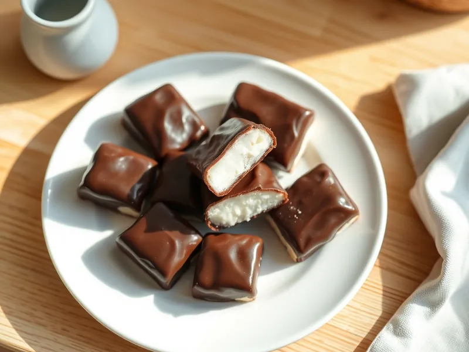

Творожные сырки в шоколаде домашние
Сладкие творожные батончики в глазури из тёмного шоколада
80 мин6 порц.278 ккал на порциюБ 10 · Ж 17 · У 21Русская кухня
Открыть в приложении: порции, таймеры, список покупок
Продукты на 6 порц.
- Творог 5%300 г
- Сливочное масло40 г
- Сахар2 ст. л.
- Ванильный сахар1 шт
- Шоколад тёмный150 г
Как готовить
- Протрите творог через сито или пробейте блендером 1 минуту до гладкой пасты.
- Вмешайте мягкое сливочное масло, сахар и ванильный сахар до однородности.
- Сформуйте мокрыми руками 12 небольших брусочков, выложите на бумагу и уберите в морозильник на 30 минут, чтобы они затвердели.
- Растопите шоколад на водяной бане на слабом огне 5 минут, помешивая.
- Обмакните каждый сырок вилкой в шоколад, дайте лишнему стечь и выложите на бумагу.
- Уберите сырки в холодильник на 20 минут, пока глазурь не застынет.
Совет. Влажный творог отожмите в марле, иначе сырки будут растекаться и глазурь не пристанет.